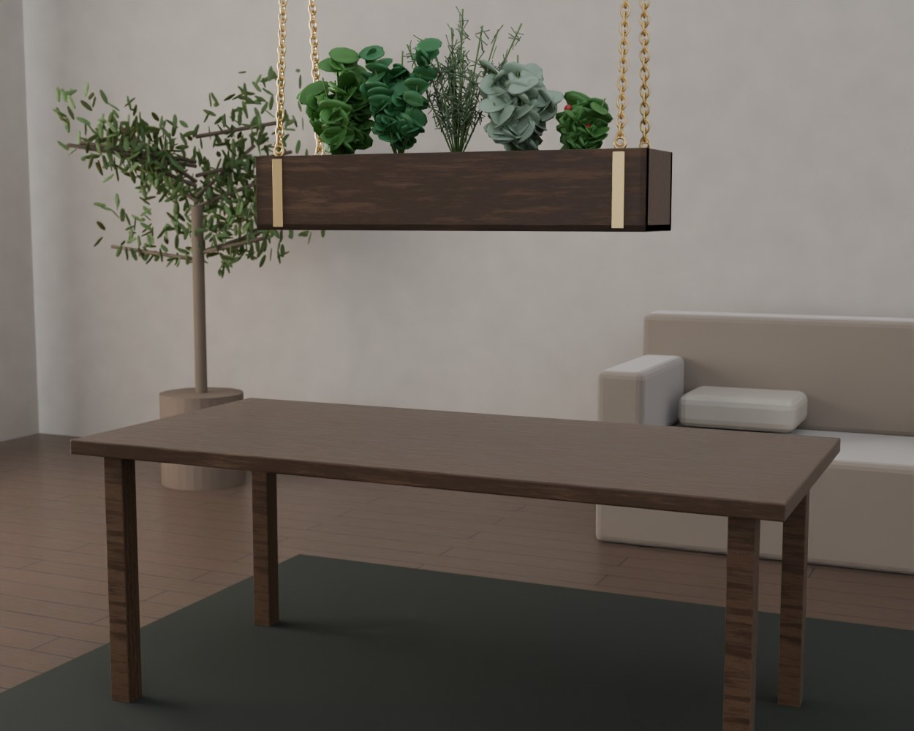
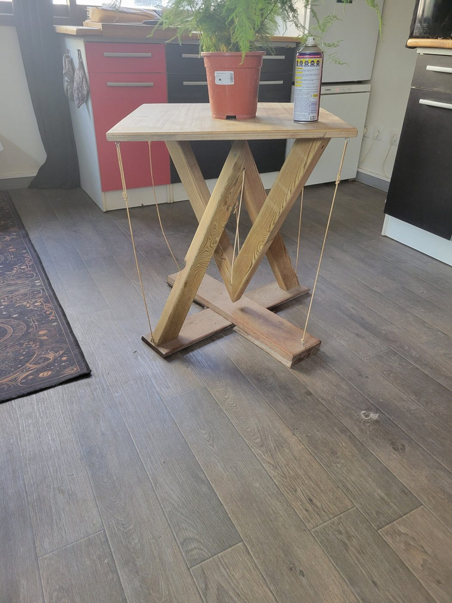

Des meubles qui tiennent par le vide.
Des tables en tenségrité : le plateau flotte, porté par une seule chaînette. Bois massif, laiton, fait main, à l'unité.
Une table qui ne devrait pas tenir debout.
La première est née d'un reste de chantier : quatre planches de pin, un plateau, et l'envie d'un piètement qui n'ait pas quatre pieds. Deux triangles : un qui monte du sol, un qui descend du plateau, qui se croisent sans se toucher. Une corde entre leurs pointes, et le plateau s'est mis à flotter. Quatre cordes aux coins, et il a cessé de bouger. Ce jour-là, l'atelier a trouvé sa grammaire : du bois qui pousse, des cordes qui retiennent.
Depuis, chaque pièce reprend cette tension. Des tables d'appoint, un guéridon rond, une table basse, une console. Un plateau d'échecs en céramique émaillée enchâssé dans le chêne. Du frêne brûlé tendu par des câbles de laiton. Des potagers qui descendent du plafond au bout de chaînettes de laiton, au-dessus de la table, ou dedans.
Rien n'est lisse. Les nœuds du bois restent, les cordes se retendent à la main, la céramique garde ses variations de cuisson. Ce sont des objets qui ont une raison d'être, un caractère, et un seul exemplaire.
La collection
Toutes les pièces présentées ont trouvé preneur. Elles donnent le ton ; les suivantes se composent avec vous.

Le potager descend à table.
Un bac en bois massif, des herbes vivantes, quatre chaînettes de laiton et un palan discret : le potager se hisse au plafond, descend au-dessus de la table pour cueillir, ou se pend en cascade devant une fenêtre.
- Monte et descend d'une main, sans outil
- Bac étanche, drainage caché, réserve d'eau
- Deux formats : suspendu au-dessus de la table, ou en cascade à trois étages

Tout commence par une planche de trop.
L'histoire de l'atelier, de la première table bancale aux pièces d'aujourd'hui.
Entrer dans l'atelierCe qu'on nous demande souvent
Les cordes tiennent-elles vraiment la table ?
Oui. Elles travaillent en traction : la corde centrale porte le plateau, les quatre haubans l'empêchent de basculer. C'est le principe de la tenségrité : du bois en compression, des cordes en traction, et rien d'autre.
Peut-on commander une pièce sur mesure ?
Oui. Dimensions, essence, couleur des cordes, plateau échiquier en céramique, gravure : le configurateur donne une estimation, puis on échange pour un devis précis. Comptez six à dix semaines de fabrication.
Comment sont expédiées les pièces ?
Montées ou en deux parties selon le format, calées dans une caisse bois, en France métropolitaine et en Europe. Remise en main propre possible à l'atelier.
Quel entretien ?
Le bois est huilé : un chiffon sec au quotidien, une huile dure une fois par an. Les cordes se retendent en quelques secondes au nœud de tension ; un jeu de rechange est fourni.